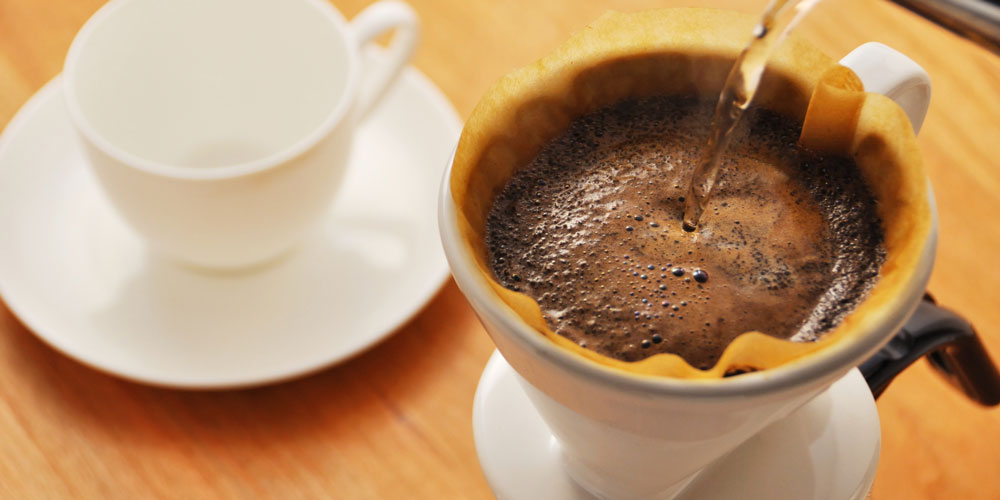

カフェ ビーンへようこそ
飯田橋駅から徒歩5分。閑静な都心の住宅街の中にカフェ ビーンはあります。カップオブエクセレンスの入賞作品をはじめ、オーナー自らが世界中から直接買い付けてきたこだわりのコーヒーと、くつろぎの空間をご用意してお待ちしています。
おいしい一杯へのこだわり
1.旬なコーヒー豆を毎日お店で焙煎

カフェ・ビーンのコーヒー豆はいつも新鮮。世界中から毎週入荷するニュークロップを直火式の小型ロースターで毎日少しずつお店で焙煎しています。
2.注文ごとに1杯ずつドリップ

新鮮なのは豆だけではありません。コーヒードリンクはすべて、注文をいただいてから1杯ずつ丁寧にハンドドリップで提供します。